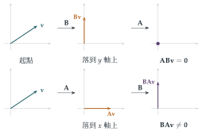

STEP II 1993，第 6 題
繼續之前，請先閱讀題目（原題為英文）。題目載於 STEP Support Programme 的題目資料庫： step.maths.org/questions/93-s2-q6
引子
矩陣（matrix）可以相加，也可以相乘，所以我們很容易把它們當作數來看待。這道題正是要考驗這種想法：它列出四條對數成立的「法則」，問哪些對矩陣仍然成立。結果大部分都不成立，而它們不成立的方式很有啟發性。矩陣乘法不滿足交換律（not commutative）；有些非零矩陣的乘積是零；而一個矩陣的二次方程可以有無窮多個解。
這些「失效」並不是缺陷，反而正是矩陣有用的原因：矩陣描述的是空間的變換（transformation），而以不同的次序進行兩個變換，確實會得到不同的結果。1925 年，海森堡（Werner Heisenberg）發現量子力學中的物理量的表現像矩陣而不像數，而 \(\mathbf{AB} = \mathbf{BA}\) 不成立，正是不確定性原理（uncertainty principle）的數學形式。
動筆之前
對實數而言，為甚麼 \(ab = 0\) 可推出 \(a = 0\) 或 \(b = 0\)？這個論證用到了數的哪一項性質？這項性質對矩陣成立嗎？
若 \(ab = 0\) 而 \(a \neq 0\)，兩邊除以 \(a\) 便得 \(b = 0\)。這個論證需要每個非零的數都有逆（inverse）。非零矩陣卻不一定有逆（行列式（determinant）為零的矩陣就沒有），所以這個論證行不通。同時也要記住幾何上的圖像：矩陣是平面的一個變換，而乘積 \(\mathbf{AB}\) 的意思是「先做 \(\mathbf{B}\)，再做 \(\mathbf{A}\)」。
逐步解題
階段 1 能否有 \(\mathbf{AB} = \mathbf{0}\) 但 \(\mathbf{BA} \neq \mathbf{0}\)？
從幾何角度去想。你希望 \(\mathbf{B}\) 把所有東西送到一條直線上，然後 \(\mathbf{A}\) 把這條直線壓成零。但次序調轉時，\(\mathbf{A}\) 不應把所有東西都壓到會被 \(\mathbf{B}\) 消去的地方。
設 \(\mathbf{A} = \begin{pmatrix} 1 & 0 \\ 0 & 0 \end{pmatrix}\)，它是到 \(x\) 軸上的投影（projection），把 \(y\) 軸消去；又設 \(\mathbf{B} = \begin{pmatrix} 0 & 0 \\ 1 & 0 \end{pmatrix}\)，它把 \((x, y)\) 送到 \((0, x)\)，即送到 \(y\) 軸上。於是 \[\mathbf{AB} = \begin{pmatrix} 1 & 0 \\ 0 & 0 \end{pmatrix}\begin{pmatrix} 0 & 0 \\ 1 & 0 \end{pmatrix} = \begin{pmatrix} 0 & 0 \\ 0 & 0 \end{pmatrix}, \qquad \mathbf{BA} = \begin{pmatrix} 0 & 0 \\ 1 & 0 \end{pmatrix} \neq \mathbf{0}.\] 這個斷言是錯的（圖 7.1.1）。■
階段 2 平方差
小心展開，保持每個乘積的次序： \[(\mathbf{A} - \mathbf{B})(\mathbf{A} + \mathbf{B}) = \mathbf{A}^2 + \mathbf{AB} - \mathbf{BA} - \mathbf{B}^2.\] 這個式子等於 \(\mathbf{A}^2 - \mathbf{B}^2\)，當且僅當 \(\mathbf{AB} = \mathbf{BA}\)。取第 1 階段的矩陣，\(\mathbf{AB} - \mathbf{BA} = -\mathbf{BA} \neq \mathbf{0}\)，所以這個斷言是錯的。■
階段 3 \(\mathbf{AX} = \mathbf{0}\) 的非零解
若 \(\det\mathbf{A} \neq 0\)，你可以對 \(\mathbf{AX} = \mathbf{0}\) 做甚麼？若 \(\det\mathbf{A} = 0\)，你能否找到一個非零的列向量（column vector）\(\mathbf{v}\)，使得 \(\mathbf{Av} = \mathbf{0}\)？
若 \(\det\mathbf{A} \neq 0\)，則 \(\mathbf{A}^{-1}\) 存在，而 \(\mathbf{X} = \mathbf{A}^{-1}\mathbf{AX} = \mathbf{0}\)：沒有非零解。
若 \(\det\mathbf{A} = 0\)，寫 \(\mathbf{A} = \begin{pmatrix} a & b \\ c & d \end{pmatrix}\)，其中 \(ad = bc\)。向量 \(\begin{pmatrix} b \\ -a \end{pmatrix}\) 和 \(\begin{pmatrix} d \\ -c \end{pmatrix}\) 滿足 \(\mathbf{A}\begin{pmatrix} b \\ -a \end{pmatrix} = \begin{pmatrix} ab - ba \\ cb - da \end{pmatrix} = \mathbf{0}\)，另一個向量亦同理。由於 \(\mathbf{A} \neq \mathbf{0}\)，兩者之中至少有一個非零；把它記作 \(\mathbf{v}\)。那麼，兩列都是 \(\mathbf{v}\) 的矩陣 \(\mathbf{X}\) 是非零的，並且 \(\mathbf{AX} = \mathbf{0}\)。所以這個斷言是對的。■
階段 4 有多少個平方根？
找出非零的 \(\mathbf{A}\) 和 \(\mathbf{B}\)，使得 \(\mathbf{X}^2 + \mathbf{AX} + \mathbf{B} = \mathbf{0}\) 有無窮多個解。（提示：把左邊變成完全平方 \((\mathbf{X} - \mathbf{I})^2\)，再想想平方為零的矩陣。）
取 \(\mathbf{A} = -2\mathbf{I}\) 和 \(\mathbf{B} = \mathbf{I}\)，兩者都非零。方程變成 \((\mathbf{X} - \mathbf{I})^2 = \mathbf{0}\)。任何滿足 \(\mathbf{N}^2 = \mathbf{0}\) 的矩陣 \(\mathbf{N}\) 都給出一個解 \(\mathbf{X} = \mathbf{I} + \mathbf{N}\)，而這樣的 \(\mathbf{N}\) 有無窮多個： \[\mathbf{N} = \begin{pmatrix} 0 & t \\ 0 & 0 \end{pmatrix}, \qquad \mathbf{N}^2 = \mathbf{0} \text{ 對任意實數 } t.\] 所以對每一個 \(t\)，\(\mathbf{X} = \begin{pmatrix} 1 & t \\ 0 & 1 \end{pmatrix}\) 都是解，這個斷言是錯的。■
回顧
次序很重要。每次展開都必須保持乘積的次序；\(\mathbf{AB}\) 和 \(\mathbf{BA}\) 通常並不相同。
零因子（zero divisors）。非零矩陣相乘可以得零，這就破壞了「二次方程最多有兩個根」背後的論證。
從變換的角度去想。只要想像矩陣對平面做了甚麼，每個反例都很容易找到。

背後的數學
凱萊（Arthur Cayley）在 1858 年引入矩陣代數，把矩陣看成可以相加和相乘的單一對象，而不僅僅是係數表。他立刻注意到乘法不滿足交換律，並證明了凱萊–哈密頓定理（Cayley–Hamilton theorem）：每個方陣都滿足它自己的特徵方程（characteristic equation）。對於跡（trace）為 \(t\)、行列式為 \(d\) 的 \(2 \times 2\) 矩陣，這就是說 \(\mathbf{M}^2 - t\mathbf{M} + d\mathbf{I} = \mathbf{0}\)，本章會反覆用到這個事實（第 7.4 節）。\(2 \times 2\) 實矩陣構成一個環（ring）：可以加、減、乘，但乘法不滿足交換律，而且存在零因子，即乘積為零的非零元素。
無窮多個平方根
第 4 階段的結論還可以變得更加驚人。方程 \(\mathbf{X}^2 = \mathbf{I}\) 有明顯的解 \(\pm\mathbf{I}\)，但平面上對任何一條通過原點的直線的反射（reflection）\(\mathbf{X} = \begin{pmatrix} \cos\theta & \sin\theta \\ \sin\theta & -\cos\theta \end{pmatrix}\) 也都是解，因為反射兩次等於甚麼也沒做。這就是 \(\mathbf{I}\) 的一整個圓那麼多的平方根。係數為數的 \(n\) 次多項式最多有 \(n\) 個根，是因為數沒有零因子；矩陣卻有，於是這個根的數目上限便不再成立。
物理學中的非交換性
在經典力學中，位置 \(x\) 和動量 \(p\) 都是數，並且 \(xp = px\)。在量子力學中，它們變成算子（operator，即無窮矩陣），滿足 \(xp - px = \mathrm{i}\hbar\)，其中 \(\hbar\) 是普朗克（Planck）常數除以 \(2\pi\)。單憑這一條非交換關係，就可推出海森堡的不確定性原理：位置和動量不可能同時被準確得知。海森堡在 1925 年發現量子力學的法則時，並不知道矩陣是甚麼；是玻恩（Max Born）認出海森堡所發明的那條奇怪的乘法法則就是矩陣乘法。
思維技巧
遇到一種新的對象時，要檢查哪些熟悉的法則仍然成立，並弄清楚每條法則究竟依賴哪一項性質。
法則「\(ab = 0\) 可推出 \(a = 0\) 或 \(b = 0\)」依賴除法；「\((a - b)(a + b) = a^2 - b^2\)」依賴交換律。知道每條法則建基於甚麼，你就知道甚麼時候仍然可以使用它。
延伸練習
甚麼時候可交換？求所有與 \(\begin{pmatrix} 1 & 1 \\ 0 & 1 \end{pmatrix}\) 可交換的 \(2 \times 2\) 矩陣。
零的平方根。求所有滿足 \(\mathbf{N}^2 = \mathbf{0}\) 的 \(2 \times 2\) 實矩陣 \(\mathbf{N}\)。（提示：利用凱萊–哈密頓定理證明 \(\operatorname{tr}\mathbf{N} = \det\mathbf{N} = 0\)。）
反射。證明每個反射矩陣 \(\begin{pmatrix} \cos\theta & \sin\theta \\ \sin\theta & -\cos\theta \end{pmatrix}\) 的平方都是 \(\mathbf{I}\)，並求出它所對應的反射軸。
凱萊–哈密頓定理。以直接計算證明每個 \(2 \times 2\) 矩陣都滿足 \(\mathbf{M}^2 - (\operatorname{tr}\mathbf{M})\mathbf{M} + (\det\mathbf{M})\mathbf{I} = \mathbf{0}\)。
延伸閱讀
Gilbert Strang, Introduction to Linear Algebra（Wellesley-Cambridge）。最受歡迎的線性代數入門教科書，着重理解。
Sheldon Axler, Linear Algebra Done Right（Springer；可在網上免費閱讀）。取向較為抽象，以線性映射而非矩陣為中心。
Jim Baggott, The Quantum Story（Oxford University Press）。量子力學的歷史，包括海森堡的矩陣力學。